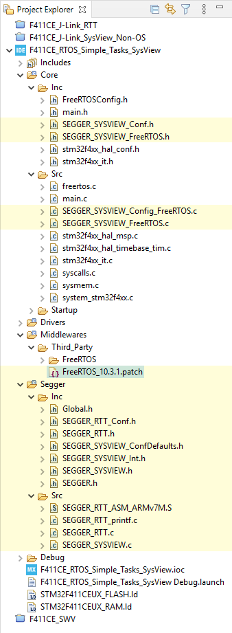

SEGGER J-Link System View - A tool to record and visualize system activities
SEGGER System View is a real-time recording and visualization tool for embedded systems that reveals the true runtime behavior of an application, going far deeper than the system insights provided by debuggers. This is particularly effective when developing and working with complex embedded systems comprising multiple threads and interrupts. System View can ensure a system performs as designed, can track down inefficiencies, and find unintended interactions and resource conflicts.
Table of Content
SEGGER_SysView_V330.zip F051R8 J-Link SysView NoOS
F411CE J-Link SysView NoOS F411CE_RTOS_Simple_Tasks_SysView.zip
1. System View⚓︎
Visit the Official J-Link System View page on SEGGER website for more information.
SEGGER’s J-Link System View is written on top of the excellent J-Link Real-Time Transfer to record many types of events in real-time in an embedded system. Those events can be interrupts, timers, task switches and scheduling with an RTOS, API function calls and returns, or user events and messages. The events are retrieved from the target, analyzed and visualized in the System View Application, while the target keeps running.
1.1. How System View Works⚓︎
To keep the communication overhead on the target system low, it only needs to record basic information, such as “Function with ID X has been called with parameter values y and z at the n ticks after the last event”. System View analyzes all information from the events and shows:
- The recording time or system time when the call happened
- The task/context in which the call happened
- The interrupt name, timer ID, and marker name
- The API function name and its parameters and values
- The duration of the any pair of start-stop, enter-exit events
The timestamps for events can be as accurate as 1 CPU cycle. A regular event is just 4 to 8 bytes long.
1.2. Figure out Potential problems⚓︎
Issues and inefficiencies in the system can be identified below ways:
- Incorrect task priorities or priority inversion leading to starvation
- Incorrect inter-task communication
- Inefficient delays and timeouts
- Spurious or unnecessary interrupts
- Unexpected log run-time of a short task
High CPU Load can lead to:
- Bottlenecks which may lead to delayed execution of important tasks
- Dropped data or overflow of incoming buffer
1.3. System View License⚓︎
System View may be used with a non-commercial license for evaluation, educational and hobbyist purposes. When using System View under the non-commercial license, no activation is required. On start of the System View Application, a popup is presented, the click Continue to accept the license terms.
1.4. System View APIs⚓︎
The SEGGER System View implementation is written in ANSI C on the top of RTT, therefore, it can be easily integrated into any embedded application. The System View needs to be initialized before it can be used. However, it does not automatically run to reduce CPU Load and power usage. System View only runs when it gets request from Host’s System View Application.
Control functions
| Function | Description |
|---|---|
SEGGER_SYSVIEW_Init() |
Initializes the SYSVIEW module |
SEGGER_SYSVIEW_Start() |
Start recording System View events. This function is triggered by the System View Application on connect. |
SEGGER_SYSVIEW_Stop() |
Stop recording System View events. This function is triggered by the System View Application on disconnect. |
Configuration functions
| Function | Description |
|---|---|
SEGGER_SYSVIEW_Conf() |
Initialize and configures System View |
SEGGER_SYSVIEW_SetRAMBase() |
Sets the RAM base address |
SEGGER_SYSVIEW_SendSysDesc() |
Send the system description string to the host |
SEGGER_SYSVIEW_SendTaskList() |
Send all tasks descriptors to the host |
SEGGER_SYSVIEW_SendTaskInfo() |
Send a Task Info Packet, containing TaskId for identification, task priority and task name |
SEGGER_SYSVIEW_X_GetTimestamp() |
Callback called by System View to get the timestamp in cycles |
Event recording functions
| Function | Description |
|---|---|
SEGGER_SYSVIEW_RecordEnterISR() |
Format and send an ISR entry event |
SEGGER_SYSVIEW_RecordExitISR() |
Format and send an ISR exit event |
SEGGER_SYSVIEW_RecordEnterTimer() |
Format and send a Timer entry event |
SEGGER_SYSVIEW_RecordExitTimer() |
Format and send a Timer exit event |
SEGGER_SYSVIEW_OnIdle() |
Record an Idle event |
SEGGER_SYSVIEW_OnTaskCreate() |
Record a Task Create event |
SEGGER_SYSVIEW_OnTaskStartExec() |
Record a Task Start Execution event |
SEGGER_SYSVIEW_OnTaskStartReady() |
Record a Task Start Ready event |
SEGGER_SYSVIEW_OnTaskStopExec() |
Record a Task Stop Execution event |
SEGGER_SYSVIEW_OnTaskStopReady() |
Record a Task Stop Ready event |
SEGGER_SYSVIEW_OnTaskTerminate() |
Record a Task termination event |
SEGGER_SYSVIEW_MarkStart() |
Record a Performance Marker Start event to start measuring runtime |
SEGGER_SYSVIEW_Mark() |
Record a Performance Marker intermediate event |
SEGGER_SYSVIEW_MarkStop() |
Record a Performance Marker Stop event to stop measuring runtime |
User API recording functions
| Function | Description |
|---|---|
SEGGER_SYSVIEW_RecordVoid() |
Formats and sends a System View packet with an empty payload |
SEGGER_SYSVIEW_RecordU32() |
Formats and sends a System View packet containing a single U32 parameter payload |
SEGGER_SYSVIEW_RecordU32x[2:10]() |
Formats and sends a System View packet containing [2:10] U32 parameter payload |
SEGGER_SYSVIEW_RecordString() |
Formats and sends a System View packet containing a string |
SEGGER_SYSVIEW_RecordEndCall() |
Format and send an End API Call event without return value. |
SEGGER_SYSVIEW_RecordEndCallU32() |
Format and send an End API Call event with a return value |
Message recording functions
| Function | Description |
|---|---|
SEGGER_SYSVIEW_Print() |
Print a string to the host |
SEGGER_SYSVIEW_Warn() |
Print a warning string to the host |
SEGGER_SYSVIEW_Error() |
Print an error string to the host |
SEGGER_SYSVIEW_PrintfHost() |
Print a string which is formatted on the host by the System View Application |
SEGGER_SYSVIEW_WarnfHost() |
Print a string which is formatted on the host by the System View Application |
SEGGER_SYSVIEW_ErrorfHost() |
Print an error string which is formatted on the host by the System View Application |
To reduce CPU cycles used by System View to format strings, System View function *fHost() just sends a raw string and its params to the host!
2. System View Integration⚓︎
Install the System View Application firstly at System View download page.
After installation, go the application folder to get the latest source code of System View target integration, for example C:\Program Files\SEGGER\System View\Src. Here is SEGGER_SysView_V330.zip.
├─Config
│ Global.h # Typedef for data types
│ SEGGER_RTT_Conf.h # Default RTT configs
│ SEGGER_SYSVIEW_Conf.h # User SysView Configs
|
├──SEGGER
│ │ SEGGER.h # Segger common defines
│ │ SEGGER_RTT.h # RTT Header
│ │ SEGGER_RTT.c # RTT implementation
│ │ SEGGER_RTT_ASM_ARMv7M.S # for Cortex-M3/M4
│ │ SEGGER_RTT_printf.c # Print functions
│ │ SEGGER_SYSVIEW_ConfDefaults.h # SysView Default Configs
│ │ SEGGER_SYSVIEW_Int.h # SysView Internal defines
│ │ SEGGER_SYSVIEW.h # SysView header
│ │ SEGGER_SYSVIEW.c # SysView implementation
│ │
│ └───Syscalls # Standard IO redirection
│
└─Sample # Sample configs for diff. targets
├───COMM # Example to record on UART
├───embOS # Example configs
├───FreeRTOSV10 # Example configs
├───FreeRTOSV8 # Example configs
├───FreeRTOSV9 # Example configs
├───MicriumOSKernel # Example configs
├───uCOS-II # Example configs
├───uCOS-III # Example configs
└───NoOS # Example configs
└───Config
├───RX
├───Cortex-M
│ SEGGER_SYSVIEW_Config_NoOS.c
└───Cortex-M0
SEGGER_SYSVIEW_Config_NoOS_CM0.c
To integrate System View into a project,it’s recommend to put header files into Inc folder, and all source file into Src folder, as they will need to add into Build’s Path and Symbols.
3. Lab 1: Analyze a Non-OS firmware⚓︎
This lab will guide on how to add System View into an application and record its activity to analyze them.
As System View is based on RTT which runs through SWD interface, the guide to integrate on Cortex-M MCUs is the same in general. There are some steps needed for specific CPU lines, as can be seen in the Sample files of SEGGER.
Target application
- Blink an LED at 100 Hz using a general Timer
- Increase a counter value by one when press on a Button using External Interrupt
- Send the above counter value on an UART port every 100 ms in the main loop
3.1. Start a new project⚓︎
This guide is written based on projects with STM32F051R8 (Cortex-M0) as it needs more configs than other Cortex-M MCUs.
Here are settings applied to a new project before starting to add System View:
- Check if you need to enable HSE or LSE when using external crystals
- Setup debug mode for using SWD on PA13 (SWDIO) and PA14 (SWCLK)
- Setup Clock path, PLL, and the system frequency
- Enable UART1, set baud rate at 115200 bps, mode 8-N-1, and enable its interrupt
- Enable the general purpose timer, e.g. TIM3, and set to use internal system clock, interrupt at 100 Hz
- Config a button input of PA0 with External Interrupt mode
- Config a LED output on any available GPIO pin, e.g. PC8 or PC13
Here is the base code of the in the main.c file for this application’s requirement:
main.c
#include <stdio.h>
#include <string.h>
TIM_HandleTypeDef htim3;
UART_HandleTypeDef huart1;
unsigned char counter = 0;
char buffer[16] = { 0 }; // counter=xxx\r\n
void SystemClock_Config(void){...}
static void MX_GPIO_Init(void){...}
static void MX_USART1_UART_Init(void){...}
static void MX_TIM3_Init(void){...}
void HAL_TIM_PeriodElapsedCallback(TIM_HandleTypeDef *htim) {
if(htim == &htim3) {
HAL_GPIO_TogglePin(LED_GPIO_Port, LED_Pin);
}
}
void HAL_GPIO_EXTI_Callback(uint16_t GPIO_Pin) {
if(GPIO_Pin == GPIO_PIN_0) {
counter++;
}
}
void HAL_UART_TxCpltCallback(UART_HandleTypeDef *huart) {
if(huart == &huart1) {
}
}
int main(void) {
HAL_Init();
SystemClock_Config();
MX_GPIO_Init();
MX_USART1_UART_Init();
MX_TIM3_Init();
HAL_TIM_Base_Start_IT(&htim3);
while (1) {
sprintf(buffer, "counter = %03d\r\n", counter);
HAL_UART_Transmit(&huart1, (uint8_t*)buffer, strlen(buffer),
HAL_MAX_DELAY);
HAL_Delay(100);
}
}
When start up, this application prints out counter = 000 every 100 ms. If press on the Button, the counter value is increased, not always by 1, but sometimes by 3, 4, or more, due to un-debounced input.
3.2. Import System View files⚓︎
The base files of SEGGER System View can be added in a separated folder Segger, and custom config files can can be added into the project main folder. See the below folder structure:
Sample files
SEGGER provides Sample files for different types of OS and CPU. Make sure to include correct header and source files for the target project.
Read the System View Manual for more details of each type of OS and CPU support.
This project is for STM32F051R8 MCU which is based on Cortex-M0 CPU, therefore, the file SEGGER_SYSVIEW_Config_NoOS_CM0.c will be included.
Add Include Paths
Open the Project Properties and select C/C++ Build » Settings. Then add ../Segger/Inc into to include paths of both GCC Assembler and GCC Compiler
Add source files
To make System View source files get compiled, add the folder /Segger into the Source Location list in the Paths and Symbols setting under the C/C++ General property.
3.3. Configure System View⚓︎
Before System View can be used, it needs to be initialized, including:
- Setup RTT base
- Set RAM Base address
- Send Device Information
- Send Interrupts description
- Set Timestamp source
In the main.c, include the SEGGER System View header files, then in the main() function, call to SEGGER_SYSVIEW_Conf() function to initialize the System View stuff:
main.c
#include "SEGGER_SYSVIEW_Conf.h"
#include "SEGGER_SYSVIEW.h"
int main() {
SEGGER_SYSVIEW_Conf(); // initialize System View
while(1) {...}
}
Normally, SEGGER_SYSVIEW_Conf() will initialize the System View with System Clock Frequency (saved in SystemCoreClock variable) for timestamp resolution, and provide a _cbSendSystemDesc() callback function which will be executed when the host application requests to start monitoring. The device information have to be sent to host application, with custom data, therefore it is implemented in the SEGGER_SYSVIEW_Config_NoOS_CM0.c.
The next step is to set the RAM Base address. Every variable’s address will be subtracted to this base address to get an offset value which is later encoded in only 1 or 2 bytes. The RAM Base address for ARM all Cortex-M MCUs is 0x20000000:
SEGGER_SYSVIEW_Config_NoOS_CM0.c
#define SYSVIEW_RAM_BASE (0x20000000)
Here is the SEGGER_SYSVIEW_Conf() function:
void SEGGER_SYSVIEW_Conf(void) {
SEGGER_SYSVIEW_Init(SYSVIEW_TIMESTAMP_FREQ, SYSVIEW_CPU_FREQ,
0, _cbSendSystemDesc);
SEGGER_SYSVIEW_SetRAMBase(SYSVIEW_RAM_BASE);
}
Next step is to implement the callback function _cbSendSystemDesc() which sends the Device information, including the App Name, the Device Name, the Core Name, the OS Name, and the interrupts used in the application:
SEGGER_SYSVIEW_Config_NoOS_CM0.c
#define SYSVIEW_APP_NAME "System View Demo"
#define SYSVIEW_DEVICE_NAME "STM32F051R8"
#define SYSVIEW_CORE_NAME "Cortex-M0"
#define SYSVIEW_OS_NAME "Non-OS_Cortex-M0"
static void _cbSendSystemDesc(void) {
SEGGER_SYSVIEW_SendSysDesc("N="SYSVIEW_APP_NAME","
"D="SYSVIEW_DEVICE_NAME","
"C="SYSVIEW_CORE_NAME","
"O="SYSVIEW_OS_NAME);
SEGGER_SYSVIEW_SendSysDesc("I#15=SysTick");
SEGGER_SYSVIEW_SendSysDesc("I#21=EXTI0_1_IRQHandler");
SEGGER_SYSVIEW_SendSysDesc("I#32=TIM3_IRQHandler");
SEGGER_SYSVIEW_SendSysDesc("I#43=USART1_IRQHandler");
}
The OS Name also is used by System View Application to load useful descriptions for displaying analysed data. Read more in APIs Descriptions.
The Interrupt number can be found in the g_pfnVectors table in the startup_stm32f051r8tx.s. Different cores have different interrupt mapping, even some interrupts remain the same number, e.g. the interrupt SysTick_Handler always is mapped to the number #15. Application should only send in-use interrupts to the host. The main loop, and each interrupt is considered as a different context.
g_pfnVectors:
.word _estack
.word Reset_Handler /* 1 */
.word NMI_Handler /* 2 */
.word HardFault_Handler /* 3 */
.word 0 /* 4 */
.word 0 /* 5 */
.word 0 /* 6 */
.word 0 /* 7 */
.word 0 /* 8 */
.word 0 /* 9 */
.word 0 /* 10 */
.word SVC_Handler /* 11 */
.word 0 /* 12 */
.word 0 /* 13 */
.word PendSV_Handler /* 14 */
.word SysTick_Handler /* 15 */
.word WWDG_IRQHandler /* 16 */
.word PVD_IRQHandler /* 17 */
.word RTC_IRQHandler /* 18 */
.word FLASH_IRQHandler /* 19 */
.word RCC_CRS_IRQHandler /* 20 */
.word EXTI0_1_IRQHandler /* 21 */
.word EXTI2_3_IRQHandler /* 22 */
.word EXTI4_15_IRQHandler /* 23 */
.word TSC_IRQHandler /* 24 */
.word DMA1_Channel1_IRQHandler /* 25 */
.word DMA1_Channel2_3_IRQHandler /* 26 */
.word DMA1_Channel4_5_IRQHandler /* 27 */
.word ADC1_COMP_IRQHandler /* 28 */
.word TIM1_BRK_UP_TRG_COM_IRQHandler /* 29 */
.word TIM1_CC_IRQHandler /* 30 */
.word TIM2_IRQHandler /* 31 */
.word TIM3_IRQHandler /* 32 */
.word TIM6_DAC_IRQHandler /* 33 */
.word 0 /* 34 */
.word TIM14_IRQHandler /* 35 */
.word TIM15_IRQHandler /* 36 */
.word TIM16_IRQHandler /* 37 */
.word TIM17_IRQHandler /* 38 */
.word I2C1_IRQHandler /* 39 */
.word I2C2_IRQHandler /* 40 */
.word SPI1_IRQHandler /* 41 */
.word SPI2_IRQHandler /* 42 */
.word USART1_IRQHandler /* 43 */
.word USART2_IRQHandler /* 44 */
.word 0 /* 45 */
.word CEC_CAN_IRQHandler /* 46 */
.word 0 /* 47 */
The final step is to help System View find the system timestamp which is used in all events for processing the timeline of recorded events.
For Cortex-M0, it is needed to increase the variable SEGGER_SYSVIEW_TickCnt in the SysTick interrupt, as soon as that handler is executed. This variable is used in the function SEGGER_SYSVIEW_X_GetTimestamp() to correctly calculate the clock cycles.
stm32f0xx_it
#include "SEGGER_SYSVIEW.h"
void SysTick_Handler(void)
{
SEGGER_SYSVIEW_TickCnt++;
HAL_IncTick();
}
Cycle counter
Except on Cortex-M0 MCUs do not have Cycle Counter, therefore, it needs to be calculated manually based on the SysTick interrupt and the SysTick reload register. Other Cortex-M CPU has CPU Cycle Counter register to be used as system timestamp. Both of two methods provide 1-cycle resolution.
3.4. Print messages to host⚓︎
To log the counter value to both the UART1 interface and the System View application, add the function all SEGGER_SYSVIEW_Print() which sends a string to the host:
main.c
while (1) {
sprintf(buffer, "counter = %03d\r\n", counter);
HAL_UART_Transmit(&huart1, (uint8_t*)buffer, strlen(buffer),
HAL_MAX_DELAY);
SEGGER_SYSVIEW_Print(buffer);
HAL_Delay(100);
}
3.5. Run the System View⚓︎
Connect any J-Link probe into the SWD interface of the target MCU. Then start the System View application on the host PC.


Convert ST-LINK to J-LINK
SEGGER offers a firmware upgrading the ST-LINK on-board on the Nucleo and Discovery Boards to a J-LINK On-Board debugger.
Start the System View for the first time, it will show a recorded example. Go to Tools » Preferences and uncheck the checkbox Load last data on start.
When starting to record a new session, it is recommended to check and set the target device. Press Alt + Return to show the device selection:
Press F5 or click on the start button to start recording. At the beginning step in this lab, the System View will display:
- Device information which are set above
- The message of counter value every 100 ms
3.6. Record interrupts⚓︎
In the file stm32f0xx_it.c, in each concerning interrupt handler, add a pair of ISR recording function SEGGER_SYSVIEW_RecordEnterISR() and SEGGER_SYSVIEW_RecordExitISR() to track the interrupts. It automatically retrieves the interrupt ID via a special register implemented in the SEGGER_SYSVIEW_GET_INTERRUPT_ID() function macro:
main.c
void SysTick_Handler(void) {
SEGGER_SYSVIEW_TickCnt++; // must be at the beginning
SEGGER_SYSVIEW_RecordEnterISR();
HAL_IncTick();
SEGGER_SYSVIEW_RecordExitISR();
}
void EXTI0_1_IRQHandler(void) {
SEGGER_SYSVIEW_RecordEnterISR();
HAL_GPIO_EXTI_IRQHandler(GPIO_PIN_0);
SEGGER_SYSVIEW_RecordExitISR();
}
void TIM3_IRQHandler(void) {
SEGGER_SYSVIEW_RecordEnterISR();
HAL_TIM_IRQHandler(&htim3);
SEGGER_SYSVIEW_RecordExitISR();
}
void USART1_IRQHandler(void) {
SEGGER_SYSVIEW_RecordEnterISR();
HAL_UART_IRQHandler(&huart1);
SEGGER_SYSVIEW_RecordExitISR();
}
This time, when recording with System View, there are many events captured. Below is a screenshot of the moment I pressed on the BUTTON once, which does not have a debouncing filter, there were a lot of ISRs triggered. That explains why the counter variable were increased multiple times.
3.7. Record a function⚓︎
It’s known that the HAL IRQs take care a lot of user cases, which indeed causes wasting time, before it calls to a user’s callback function.
The System View records to enter and the exit event of an interrupt, but it does not automatically record a user function. To do that, application must manually set the starting point of the function’s entry with one of:
SEGGER_SYSVIEW_RecordVoid(), orSEGGER_SYSVIEW_RecordU32(), orSEGGER_SYSVIEW_RecordString()
and the ending point of that function with one of:
SEGGER_SYSVIEW_RecordEndCall(), orSEGGER_SYSVIEW_RecordEndCallU32()function.
These functions need an ID to distinguish the different APIs. ID is 2 bytes, comparing to an API function name which usually is much more than 2 bytes, it is very short to save sending bandwidth.
For example, to measure the main loop, and user callback functions, define some IDs starting from 32 as below:
SEGGER_SYSVIEW_Conf.h
#define APP_EVTID_MAIN_LOOP 32
#define APP_EVTID_HAL_TIM_PeriodElapsedCallback 33
#define APP_EVTID_HAL_GPIO_EXTI_Callback 34
#define APP_EVTID_HAL_UART_TxCpltCallback 35
main.c
void HAL_TIM_PeriodElapsedCallback(TIM_HandleTypeDef *htim) {
SEGGER_SYSVIEW_RecordVoid(APP_EVTID_HAL_TIM_PeriodElapsedCallback);
if(htim == &htim3) {
HAL_GPIO_TogglePin(LED_GPIO_Port, LED_Pin);
}
SEGGER_SYSVIEW_RecordEndCall(APP_EVTID_HAL_TIM_PeriodElapsedCallback);
}
void HAL_GPIO_EXTI_Callback(uint16_t GPIO_Pin) {
SEGGER_SYSVIEW_RecordVoid(APP_EVTID_HAL_GPIO_EXTI_Callback);
if(GPIO_Pin == GPIO_PIN_0) {
counter++;
}
SEGGER_SYSVIEW_RecordEndCall(APP_EVTID_HAL_GPIO_EXTI_Callback);
}
void HAL_UART_TxCpltCallback(UART_HandleTypeDef *huart) {
SEGGER_SYSVIEW_RecordVoid(APP_EVTID_HAL_UART_TxCpltCallback);
if(huart == &huart1) {
}
SEGGER_SYSVIEW_RecordEndCall(APP_EVTID_HAL_UART_TxCpltCallback);
}
int main(void) {
while (1) {
SEGGER_SYSVIEW_RecordVoid(APP_EVTID_MAIN_LOOP);
sprintf(buffer, "counter = %03d\r\n", counter);
HAL_UART_Transmit(&huart1, (uint8_t*)buffer, strlen(buffer),
HAL_MAX_DELAY);
SEGGER_SYSVIEW_Print(buffer);
HAL_Delay(100);
SEGGER_SYSVIEW_RecordEndCall(APP_EVTID_MAIN_LOOP);
}
}
System View reserved IDs
The first 32 IDs from 0 to 31 are reserved by System View for its defined events:
SEGGER_SYSVIEW.h
#define SYSVIEW_EVTID_NOP 0 // Dummy packet.
#define SYSVIEW_EVTID_OVERFLOW 1
#define SYSVIEW_EVTID_ISR_ENTER 2
#define SYSVIEW_EVTID_ISR_EXIT 3
#define SYSVIEW_EVTID_TASK_START_EXEC 4
#define SYSVIEW_EVTID_TASK_STOP_EXEC 5
#define SYSVIEW_EVTID_TASK_START_READY 6
#define SYSVIEW_EVTID_TASK_STOP_READY 7
#define SYSVIEW_EVTID_TASK_CREATE 8
#define SYSVIEW_EVTID_TASK_INFO 9
#define SYSVIEW_EVTID_TRACE_START 10
#define SYSVIEW_EVTID_TRACE_STOP 11
#define SYSVIEW_EVTID_SYSTIME_CYCLES 12
#define SYSVIEW_EVTID_SYSTIME_US 13
#define SYSVIEW_EVTID_SYSDESC 14
#define SYSVIEW_EVTID_MARK_START 15
#define SYSVIEW_EVTID_MARK_STOP 16
#define SYSVIEW_EVTID_IDLE 17
#define SYSVIEW_EVTID_ISR_TO_SCHEDULER 18
#define SYSVIEW_EVTID_TIMER_ENTER 19
#define SYSVIEW_EVTID_TIMER_EXIT 20
#define SYSVIEW_EVTID_STACK_INFO 21
#define SYSVIEW_EVTID_MODULEDESC 22
#define SYSVIEW_EVTID_INIT 24
#define SYSVIEW_EVTID_NAME_RESOURCE 25
#define SYSVIEW_EVTID_PRINT_FORMATTED 26
#define SYSVIEW_EVTID_NUMMODULES 27
#define SYSVIEW_EVTID_END_CALL 28
#define SYSVIEW_EVTID_TASK_TERMINATE 29
#define SYSVIEW_EVTID_EX 31
User can define custom IDs starting from 32 in the SEGGER_SYSVIEW_Conf.h header.
Lets what appear on the System View events: There are recorded events for starting and ending of an API. However, there is just event ID, not a human-friendly readable API name. In the below image, the TIM3 IRQ handler took 43 us to run, in which the user callback function took 14 us.
3.8. OS Description file⚓︎
In order for System View to properly decode API calls it requires a description file to be present in the /description/ directory of System View. The name of the file has to be SYSVIEW_<OSName>.txt where <OSName> is the name as sent in the system description.
This lab use Non-OS_Cortex-M0 as the OS Name, therefore, it should be a SYSVIEW_Non-OS_Cortex-M0.txt file in the description folder of System View.

A description file includes all API functions which can be recorded by the OS. Each line in the file is one function in the following format:
<ID> <Name> <Parameters> | <ReturnValue>
<Id> is the Id which is recorded for the API function. It can be in the range of 32 to 511.
<Name> is the name of the API function, displayed in the Event column of System View. It may not contain spaces.
<Parameters> and <ReturnValue> are the description string of the parameters which are recorded with the API functions. The ReturnValueDescription is optional.
The parameter display can be configured by a set of modifiers:
%b- Display parameter as binary.%B- Display parameter as hexadecimal string (e.g. 00 AA FF …).%d- Display parameter as signed decimal integer.%D- Display parameter as time value.%I- Display parameter as a resource name if the resource id is known to System View.%p- Display parameter as 4 byte hexadecimal integer (e.g. 0xAABBCCDD).%s- Display parameter as string.%t- Display parameter as a task name if the task id is known to System View.%u- Display parameter as unsigned decimal integer.%x- Display parameter as hexadecimal integer.
The following example shows a part of SYSVIEW_embOS.txt:
46 OS_CreateTask Task=%t Pri=%u Stack=%p Size=%u
In addition to the default modifiers the description file can define NamedTypes to map numerical values to strings, which can for example be useful to display the textual value of enums or error codes. The special character * represents for all remaining unmapped values.
NamedTypes have following format:
NamedType <TypeName> <Key>=<Value> [<Key1>=<Value1> ...]
NamedTypes can be used in the <Parameters> and the <ReturnValue>:
# Types for parameter formatters
NamedType OSErr 0=OS_ERR_NONE 10000=OS_ERR_A
# API Functions
34 OSFunc Param=%OSFlag | Returns %OSErr
When a task pauses execution its state is recorded in the System View event.
This task state can be converted to a textual representation in System View with the TaskState description.
TaskState has following format:
TaskState <Mask> <Key>=<Value>, [<Key1>=<Value1>, ...]
# Task States
TaskState 0xFF 0=Ready, 1=Delayed or Timeout
Always have an empty line in the OS description file to make the last line is parsed properly
Here is an example of OS Description file used in this lab. There are 2 NamedType defined there, %UARTx and %TIMx which take the mapping address of a peripheral to look up its name using the Data-sheet document.
SYSVIEW_Non-OS_Cortex-M0.txt
# Types
NamedType UARTx *=%p 0x40013800=UART1 0x40004400=UART2
NamedType TIMx *=%p 0x40012C00=TIM1 0x40000400=TIM3
NamedType PINx *=%u 0x0=None 0x1=PIN0 0x2=PIN1
# API IDs
32 Main_Loop
33 HAL_TIM_PeriodElapsedCallback Instance = %TIMx
34 GPIO_EXTI_Callback GPIO_Pin = %Pinx
35 HAL_UART_TxCpltCallback Instance = %UARTx
Then, the recording function should be changed to transfer API parameters:
void HAL_TIM_PeriodElapsedCallback(TIM_HandleTypeDef *htim) {
SEGGER_SYSVIEW_RecordU32(APP_EVTID_HAL_TIM_PeriodElapsedCallback,
(U32)htim->Instance);
if(htim == &htim3) {
HAL_GPIO_TogglePin(LED_GPIO_Port, LED_Pin);
}
SEGGER_SYSVIEW_RecordEndCall(APP_EVTID_HAL_TIM_PeriodElapsedCallback);
}
The result is much better, with API name and some extra information:
Then, use the API description file with string formatter in more complex example:
void HAL_GPIO_EXTI_Callback(uint16_t GPIO_Pin) {
SEGGER_SYSVIEW_RecordU32(APP_EVTID_HAL_GPIO_EXTI_Callback, GPIO_Pin);
if(GPIO_Pin == GPIO_PIN_0) {
counter++;
SEGGER_SYSVIEW_WarnfHost("counter set to %d", counter);
}
SEGGER_SYSVIEW_RecordEndCall(APP_EVTID_HAL_GPIO_EXTI_Callback);
}
3.9. Measure performance⚓︎
To measure performance, System View uses Markers to calculate the execution time between a starting point and a corresponding ending point.
This lab will send the counter value in two method: blocking, and interrupt. The functions to measure performance is SEGGER_SYSVIEW_MarkStart() and SEGGER_SYSVIEW_MarkStop(), which need IDs to create pairs.
Let’s start with defining two marker IDs:
SEGGER_SYSVIEW_Conf.h
#define APP_MARKER_UART_TX_BLOCKING 0
#define APP_MARKER_UART_TX_INTERRUPT 1
Then send the marker names in the Device Information callback function:
static void _cbSendSystemDesc(void) {
SEGGER_SYSVIEW_SendSysDesc(...);
SEGGER_SYSVIEW_NameMarker(APP_MARKER_UART_TX_BLOCKING,
"UART_TX_Blocking");
SEGGER_SYSVIEW_NameMarker(APP_MARKER_UART_TX_INTERRUPT,
"UART_TX_Interrupt");
}
In the main while loop, firstly, send the counter value using the block method. Wrap the blocking method with a pair of markers.
After the blocking method finish, start the Interrupt method. Note that, in main loop, only mark the starting time. An interrupt will be called when all bytes are transmitted in the HAL_UART_TxCpltCallback() function, therefore, add the ending marker there to calculate the second case.
void HAL_UART_TxCpltCallback(UART_HandleTypeDef *huart) {
SEGGER_SYSVIEW_RecordU32(APP_EVTID_HAL_UART_TxCpltCallback,
(U32)huart->Instance);
if(huart == &huart1) {
SEGGER_SYSVIEW_MarkStop(APP_MARKER_UART_TX_INTERRUPT);
}
SEGGER_SYSVIEW_RecordEndCall(APP_EVTID_HAL_UART_TxCpltCallback);
}
int main() {
...
while (1) {
SEGGER_SYSVIEW_RecordVoid(APP_EVTID_MAIN_LOOP);
sprintf(buffer, "counter = %03d\r\n", counter);
// measure UART TX blocking mode
SEGGER_SYSVIEW_MarkStart(APP_MARKER_UART_TX_BLOCKING);
HAL_UART_Transmit(&huart1, (uint8_t*)buffer, strlen(buffer),
HAL_MAX_DELAY);
SEGGER_SYSVIEW_MarkStop(APP_MARKER_UART_TX_BLOCKING);
// measure UART TX interrupt mode
SEGGER_SYSVIEW_MarkStart(APP_MARKER_UART_TX_INTERRUPT);
HAL_UART_Transmit_IT(&huart1, (uint8_t*)buffer, strlen(buffer));
// print
SEGGER_SYSVIEW_Print(buffer);
// delay
HAL_Delay(100);
SEGGER_SYSVIEW_RecordEndCall(APP_EVTID_MAIN_LOOP);
}
}
The result of measuring two performance points is as below:
Look at the above image, firstly, it tells that both 2 methods need the same time to complete transmitting the same message.
However, note that, in the Blocking mode, CPU is busy of wasting, while in the Interrupt mode, CPU can do something else when there is no interrupt. The total execution time of all interrupts is about ⅓ of the time needed by the blocking mode.
4. Lab 2: Analyze FreeRTOS⚓︎
Using an RTOS makes system analysis more complicated. However, System View is designed to work with RTOS after some simple steps.
4.1. Start a new project⚓︎
Let’s create a new project using FreeRTOS V10 and CMSIS V2. Here in this lab, a Black Pill board with STM32F411.
RTOS should use SysTick for its own OS delay function, while HAL function also needs a time-base to operate its own polling delay method. Read more in RTOS SysTick.
4.2. Import System View files⚓︎

The core files of Segger System View is the same as they are used in the Non-OS firmware.
The difference is the config files for RTOS, which are found in the target FreeRTOS version or any other RTOS such as embOS.
FreeRTOSV10
│
│ SEGGER_SYSVIEW_FreeRTOS.c
│ SEGGER_SYSVIEW_FreeRTOS.h
│
├───Config
│ └───Cortex-M
│ SEGGER_SYSVIEW_Config_FreeRTOS.c
│
└───Patch
FreeRTOSV10_Amazon_Core.patch
FreeRTOSV10_Core.patch
Here are the steps:
-
Copy all of those files to the project.
-
Apply patch to the FreeRTOS source.
The patch file may not be applied for newer FreeRTOS version, such as V10.3+.
It easy to modify the patch to apply into a newer version. Or download a working patch for V10.3.1 here.
-
Include
SEGGER_SYSVIEW_FreeRTOS.hat the end of the fileFreeRTOSConfig.hto override some RTOS definitions of tracing functions. -
Finally, configure System View in the file
SEGGER_SYSVIEW_Config_FreeRTOS.cwhich sends System Information, Interrupt ID & Name, Timers and Markers.
5. Appendix⚓︎
How to get Interrupt ID?
/*********************************************************************
*
* Define: SEGGER_SYSVIEW_GET_INTERRUPT_ID()
*
* Description
* Function macro to retrieve the Id of the currently active
* interrupt.
* Default
* Call user-supplied function SEGGER_SYSVIEW_X_GetInterruptId().
* Notes
* For some known compilers and cores, a ready-to-use, core-specific
* default is set.
* ARMv7M: Read ICSR[8:0] (active vector)
* ARMv6M: Read ICSR[5:0] (active vector)
*/
#ifndef SEGGER_SYSVIEW_GET_INTERRUPT_ID
#if SEGGER_SYSVIEW_CORE == SEGGER_SYSVIEW_CORE_CM3
// Get the currently active interrupt Id.
// (i.e. read Cortex-M ICSR[8:0] = active vector)
#define SEGGER_SYSVIEW_GET_INTERRUPT_ID() ((*(U32*)(0xE000ED04)) & 0x1FF)
#elif SEGGER_SYSVIEW_CORE == SEGGER_SYSVIEW_CORE_CM0
#if defined(__ICCARM__)
#if (__VER__ > 6010000)
// Workaround for IAR, which might do a byte-access to 0xE000ED04.
// Read IPSR instead.
#define SEGGER_SYSVIEW_GET_INTERRUPT_ID() (__get_IPSR())
#else
// Older versions of IAR do not include __get_IPSR,
// but might also not optimize to byte-access.
#define SEGGER_SYSVIEW_GET_INTERRUPT_ID() ((*(U32*)(0xE000ED04)) & 0x3F)
#endif
#else
// Get the currently active interrupt Id.
// (i.e. read Cortex-M ICSR[5:0] = active vector)
#define SEGGER_SYSVIEW_GET_INTERRUPT_ID() ((*(U32*)(0xE000ED04)) & 0x3F)
#endif
#else
// Get the currently active interrupt Id from the user-provided function.
#define SEGGER_SYSVIEW_GET_INTERRUPT_ID() SEGGER_SYSVIEW_X_GetInterruptId()
#endif
#endif
/*********************************************************************
*
* SEGGER_SYSVIEW_X_GetInterruptId()
*
* Function description
* Return the currently active interrupt Id,
* which ist the active vector taken from IPSR[5:0].
*
* Return value
* The current currently active interrupt Id.
*
* Additional information
* This function is not used by default, as the active vector can be
* read from ICSR instead on Cortex-M0.
* For Cortex-M0+ devices, change SEGGER_SYSVIEW_GET_INTERRUPT_ID
* in SEGGER_SYSVIEW_Conf.h to call this function instead.
*/
U32 SEGGER_SYSVIEW_X_GetInterruptId(void) {
U32 Id;
__asm volatile ("mrs %0, ipsr"
: "=r" (Id)
);
Id &= 0x3F;
return Id;
}
How to get Timestamp?
/*********************************************************************
*
* Define: SEGGER_SYSVIEW_GET_TIMESTAMP()
*
* Description
* Function macro to retrieve a system timestamp for SYSVIEW events.
* Default
* Call user-supplied function SEGGER_SYSVIEW_X_GetTimestamp().
* Notes
* For some known compilers and cores, a ready-to-use, core-specific
* default is set.
* ARMv7M: Read Cortex-M Cycle Count register.
*
* The system timestamp clock frequency has to be passed in
* SEGGER_SYSVIEW_Init().
*/
#ifndef SEGGER_SYSVIEW_GET_TIMESTAMP
#if defined (SEGGER_SYSVIEW_CORE) && (SEGGER_SYSVIEW_CORE == SEGGER_SYSVIEW_CORE_CM3)
// Retrieve a system timestamp. Cortex-M cycle counter.
#define SEGGER_SYSVIEW_GET_TIMESTAMP() (*(U32 *)(0xE0001004))
#else
// Retrieve a system timestamp via user-defined function
#define SEGGER_SYSVIEW_GET_TIMESTAMP() SEGGER_SYSVIEW_X_GetTimestamp()
#endif
#endif
/*********************************************************************
*
* SEGGER_SYSVIEW_X_GetTimestamp()
*
* Function description
* Returns the current timestamp in ticks using the system tick
* count and the SysTick counter.
* All parameters of the SysTick have to be known and are set via
* configuration defines on top of the file.
*
* Return value
* The current timestamp.
*
* Additional information
* SEGGER_SYSVIEW_X_GetTimestamp is always called when interrupts are
* disabled. Therefore locking here is not required.
*/
U32 SEGGER_SYSVIEW_X_GetTimestamp(void) {
#if USE_CYCCNT_TIMESTAMP
U32 TickCount;
U32 Cycles;
U32 CyclesPerTick;
//
// Get the cycles of the current system tick.
// SysTick is down-counting, subtract the current value
// from the number of cycles per tick.
//
CyclesPerTick = SYST_RVR + 1;
Cycles = (CyclesPerTick - SYST_CVR);
//
// Get the system tick count.
//
TickCount = SEGGER_SYSVIEW_TickCnt;
//
// If a SysTick interrupt is pending, re-read timer and adjust result
//
if ((SCB_ICSR & SCB_ICSR_PENDSTSET_MASK) != 0) {
Cycles = (CyclesPerTick - SYST_CVR);
TickCount++;
}
Cycles += TickCount * CyclesPerTick;
return Cycles;
#endif
}
Do you see how cycles is calculated?
Cycles += TickCount * CyclesPerTick;
Have you thought it is not optimized? Use breakpoints before and after that line, and compare the value of the SysTick Current Value Register to see how many cycles are used.
#define SYST_CVR (*(volatile U32*) (0xE000E018uL))
It’s just about 12 cycles.
If you want to save 12 cycles in slow MCUs, here is an optimized version:
U32 CyclesPerTick = 0;
U32 TotalCycles = 0
void SEGGER_SYSVIEW_Conf(void) {
...
CyclesPerTick = SYST_RVR + 1;
}
U32 SEGGER_SYSVIEW_X_GetTimestamp(void) {
#if USE_CYCCNT_TIMESTAMP
U32 Cycles;
//
// Get the cycles of the current system tick.
// SysTick is down-counting, subtract the current value from the number of cycles per tick.
//
Cycles = (CyclesPerTick - SYST_CVR);
//
// If a SysTick interrupt is pending, re-read timer and adjust result
//
if ((SCB_ICSR & SCB_ICSR_PENDSTSET_MASK) != 0) {
Cycles = (CyclesPerTick - SYST_CVR);
// calculate the total cycles in advance,
// but the actual total cycles will be updated when SysTick is handled
return TotalCycles + CyclesPerTick + Cycles;
}
return TotalCycles + Cycles;
#endif
}
void SysTick_Handler(void)
{
TotalCycles += CyclesPerTick;
HAL_IncTick();
}